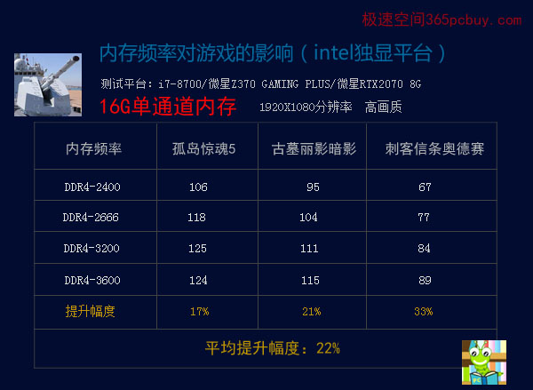
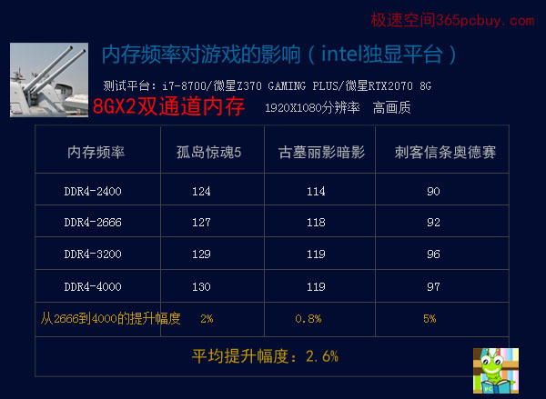

文章标题
发表时间：2019-11-10 文章浏览次数：2165 作者：pc大湿
此文发表于2019年3月28日
此文系【K先生攀岩三部曲】的第二部
第一部导读：《绝壁四千尺，手抖恐闪失：高频内存再超频，探索内存性价比（intel核显平台）》
序言：
话说K先生冒着生命危险在intel核显平台表演后，转到后台和经纪人数钱，发现没赚几个，内心苦闷。
经纪人眼珠一转,计上心来：“规则有问题。”
K先生：“什么问题？”
经纪人：“我们分别表演了单通道和双通道，才收一次门票。下次的独显平台要分开收费，上半场演单通道，下半场演双通道，不就可以收两次门票了吗？哈哈哈......"
K先生：“好主意，你可真是智赛诸葛，机强张良啊！"
经纪人只一阵奸笑。
K先生："下次的独显平台需要请明星助阵，找哪位好些呢？”
经纪人：“我认识忍痛心四兄弟，他们现在红着呢。”
K先生有点懵：“忍痛心，怎么会有这么奇怪的名字？”
经纪人：“这是艺名，当人们选购它们的时候，钱包就嗖得瘪下去，心就会痛一下，但又只能干忍着，于是得名忍痛心，简称是RTX”
K先生恍然大悟：“原来如此，那它们哪位最红呢？”
经纪人略一沉思：“是RTX2070，它的价格较低，更受欢迎。”
K先生：“那好，就这么定了。”
正文：
观看这次表演，您将明白内存带宽对intel独显平台的游戏性能有多大的影响。
衡量游戏性能的测试软件3DMARK，其中显卡的权重值太大，单双通道的得分几乎相当，因此我们弃之不用，直接选了三款大型3D游戏，分别是《孤岛惊魂5》《刺客信条：奥德赛》《古墓丽影：暗影》，这三款游戏均自带BENCHMARK，能确保在公平的环境下对比。
主持人：“各位观众，此次演出我们请来了当红明星忍痛心先生，攀岩表演即将开始，请大家火速买票入场。”
上半场表演（单通道）

图一
观众席上鸦雀无声，大家都屏住了呼吸，等待着最精彩的冲顶表演。第一次冲击4000尺的高度失败了，只见K先生拿出茅抬酒就干了大半瓶，好酒就是不同，不到两分钟，他只感到从胃中迸发出了一股强大的动力，身体的每一个毛孔，都犹如跑车的排气管在轰鸣着。只见K轻舒猿臂，嗖嗖嗖地就向上蹿了10尺，却听“哐”的一声，岩壁迸裂，K先生直接摔到了3600尺的平台上，引的观众爆发出一阵惊呼。
表演解读：
1、此次采用的16GB-3200单根内存的超频能力不如8GB-3200，只能到3600MHZ。即使在把电压调整到1.5V，超频到DDR4-4000也无法点亮。
2、单通道情况下，内存频率对游戏的影响很大，从DDR4-2400到3600，性能提升了22%，这个幅度相当可观，是实实在在的游戏性能提升。
虽然数次冲击4000尺均告失败，但观众为K先生的精神所感染，仍然爆发出了热烈的掌声。
主持人：“各位观众，单通道表演结束了，接下来我们将进行双通道表演，请大家离场后在门口重新购票。”
场馆瞬间安静了下来，观众们都愣住了，有的人瞪大了眼睛，有的人张大了嘴巴，都不敢相信还要买票。几秒后，整个看台上如同热油里放了盐，噼噼啪啪地嘈杂起来，抱怨声、咒骂声、嘘喊声交织在一起，矿泉水瓶子像雨点般砸向前台，还有人脱下了皮鞋，向主持人扔了过去。
大家骂了一会，发现K已不见人影，也就只好散了。
下半场表演（双通道）
看到观众席上燃烧起了愤怒的火焰，主持人早已脚底板抹油，溜了。
后台内，K正在对经纪人抱怨：“你看，这就是你出的馊主意！观众都散了，怎么办？”
经纪人哭丧着脸说：“哎，我也没想到呀！”
大家商量了一会，决定打一折优惠。不一会，售票处传来消息，有几个观众已经重新买了票。”
K先生说：“哪怕只卖出一张票，我也要表演，决不能失信于人。”

图二
看到观众席上的寥寥几人，K既失落又感动，暗暗下了决心：为了这些忠实的粉丝，今天拼了命也要上。只见他时而如跃枝黑猿，时而如跳涧之虎，“蹭蹭蹭”地就爬上了4000尺的平台。
表演解读：
1、下半场采用的8GB-3200单根内存，超频能力明显好于16GB-3200单条，电压调整到1.4V就上到了4000MHZ，并通过了三款游戏测试。
2、从DDR4-2400提升到DDR4-4000，平均帧数提升大约2.6%。
三款游戏测试总结：
1、以DDR4-2666为标准，intel 独显平台有必要使用双通道内存，对比图一和图二可看出，双比单大约能提升13%。
2、在DDR4-2666双通道基础上，内存频率再提升用处不大，三款游戏平均只有2.6%的提升。
特别提示：
只看标题不能误解为双通道用处不大，双通比单通大约能提升13%的游戏性能，但随着频率的继续提升，则有：“一阵超频猛如虎，一看性能提升2.5%”（2.6%约等于2.5%）
结束语
表演结束了，K和忍痛心刚从走出场馆，外面的一幕让他惊呆了——门口早已挤满了百十来号人，只见有的高举着“忍痛”的牌子，有的脸上写着“我的心心”字样，有的激动得泪流满面，有的尖叫着跑来，突然脚底一滑，摔倒晕了过去，旁边的人赶紧拨打120急救。不一会，大家就把心心先生围了个团团转。K好歹也是国际巨星，周围却只有寥寥二三人，好不尴尬，只好惺惺转回到了后台。
经纪人见K进来了，垂头丧气地说：“弟，下半场有五个观众，只收入了二元五......”
K默不作声，只作叹气。
欲知K为何而叹气，